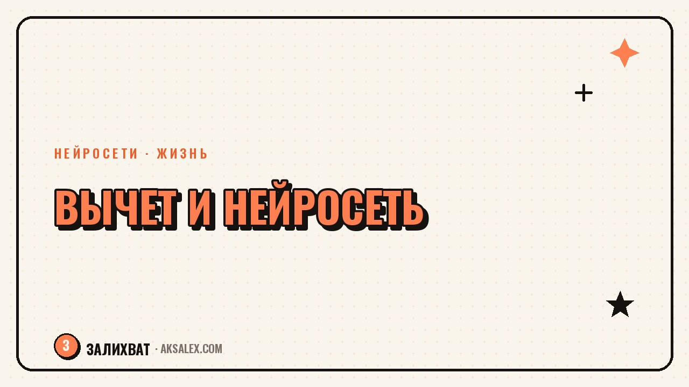

Нейросети и налоговый вычет: как разобраться самому

Налоговый вычет - это деньги, которые государство возвращает тебе за лечение, учёбу, покупку жилья или взносы в инвестиционный счёт. Процедура понятная на бумаге и путающая на практике: список документов разный для каждого случая, личный кабинет ФНС задаёт вопросы на незнакомом языке, а форма 3-НДФЛ пугает одним своим видом. Нейросеть здесь не заменит налоговую, но может взять на себя рутину: разобрать список нужных бумаг, объяснить термины человеческим языком и помочь не упустить деталь, из-за которой потом придётся переделывать декларацию.
Что нейросеть может, а что нет
Нейросеть - это справочник и помощник по формулировкам, а не юрист и не сотрудник налоговой. Она не знает твою конкретную историю платежей и не видит базу ФНС, поэтому цифры и суммы вычета она не считает точно - только оценивает порядок, по которому стоит ориентироваться.
Хорошо получается другое: разложить по пунктам, какие документы нужны под твой случай (лечение, обучение, покупка квартиры, ИИС), и объяснить разницу между вычетом через работодателя и через декларацию.
Когда нейросеть не заменит специалиста
- Сложные случаи с несколькими источниками дохода за год
- Вычеты по операциям с ценными бумагами и валютой
- Споры с налоговой, когда уже отказали в вычете
Какие документы нейросеть поможет собрать
Самая частая причина затянутой подачи - не незнание закона, а разрозненные бумаги: чеки за лечение лежат в телефоне, договор с вузом в почте, а справка 2-НДФЛ вообще не приходила. Нейросеть помогает составить личный чек-лист, если описать ситуацию в двух-трёх предложениях.
Пример чек-листа для вычета за обучение
- Договор с учебным заведением и доп. соглашения, если менялась стоимость
- Копия лицензии (если её номера нет прямо в договоре)
- Квитанции или выписки об оплате за каждый год отдельно
- Справка 2-НДФЛ с места работы за тот же год
- Свидетельство о рождении, если вычет за учёбу ребёнка
Как составить список вопросов перед обращением в ФНС
Разговор с налоговой короче, если прийти с готовыми вопросами, а не формулировать их на ходу. Нейросеть удобно использовать как тренажёр: описываешь ситуацию, а она переформулирует её в понятные пункты для личного кабинета или приёма.
- Опиши нейросети ситуацию своими словами: что покупал, когда, на какую сумму
- Попроси список документов именно под этот случай, а не общий по всем вычетам
- Уточни формулировки для обращения в поддержку ФНС
- Сверь итоговый список с официальной памяткой на сайте налоговой - это обязательный шаг
Нейросеть ускоряет подготовку, но подписывает декларацию и отвечает за цифры в ней всё равно человек, а не чат-бот.
Какую нейросеть выбрать для работы с документами
Для разбора договоров и справок важны три вещи: качество работы с русским языком, загрузка файла целиком, а не пересказ вручную, и адекватная цена, если документов много.
| Сервис | Работа с PDF и фото | Русский язык | Что подходит для вычета |
|---|---|---|---|
| YandexGPT / Алиса | Да, через загрузку файла | Отлично | Разбор терминов, черновик обращения |
| ChatGPT | Да, через загрузку файла | Хорошо | Структура чек-листа, проверка логики |
| Gemini | Да, фото и документы | Хорошо | Разбор фото чеков и квитанций |
| DeepSeek | Да, через текст и файлы | Приемлемо | Быстрые черновые списки документов |
Частые ошибки при обращении к нейросети за вычетом
Самая частая ошибка - воспринимать ответ нейросети как финальную инструкцию и не проверять его по актуальной памятке ФНС. Правила вычетов меняются, а у модели может быть устаревшее представление о том, что действует сейчас.
Вторая ошибка - загружать в чат документы с полными личными данными без необходимости. Для разбора структуры документа обычно достаточно описать содержание словами или закрыть чувствительные цифры на скане.
- Закрывай номера паспорта и СНИЛС на сканах перед загрузкой в чат
- Не указывай реквизиты банковского счёта в переписке с нейросетью
- Проверяй финальный список документов по сайту ФНС, а не только по ответу чата
Что делать, если нейросеть ошиблась
Ошибка нейросети в вопросе вычета почти всегда выглядит одинаково: модель называет сумму лимита или список документов, которые относились к прошлым правилам. Если ответ звучит слишком уверенно без ссылки на источник - это повод перепроверить, а не повод поверить.
Рабочий приём - попросить нейросеть не считать за тебя сумму, а только объяснить логику расчёта и собрать документы. Итоговую цифру покажет калькулятор в личном кабинете ФНС.
Частые вопросы
Может ли нейросеть подать декларацию за меня?
Нет, подать декларацию может только сам человек через личный кабинет ФНС, Госуслуги или лично. Нейросеть помогает подготовить формулировки и список документов, но не имеет доступа к твоей учётной записи.
Какая нейросеть лучше подходит для вопросов по налоговому вычету?
Для русскоязычных формулировок удобнее сервисы с хорошим русским языком, например YandexGPT. Для разбора фото чеков подойдёт любая модель с загрузкой файлов - важнее проверять ответ по официальной памятке.
Нейросеть посчитала сумму вычета неправильно, что делать?
Не доверяй нейросети точный расчёт суммы, используй её только для логики и подготовки документов. Точную цифру покажет калькулятор в личном кабинете ФНС.
Нужно ли платить за нейросеть, чтобы разобраться с вычетом?
Нет, для разового разбора достаточно бесплатных тарифов большинства нейросетей. Платная подписка нужна только при регулярной работе с документами.
Безопасно ли загружать документы в нейросеть для проверки?
Загружать можно, но сначала закрой чувствительные данные: паспорт, СНИЛС, реквизиты счёта. Для большинства вопросов хватит описать содержание документа словами, без полного скана.
Раз тема оказалась полезной, вот что почитать следующим. B2B-блог не про лайфстайл, а про экспертность. Разбираем форматы и роль нейросетей в таком контенте.
Читать статью →а не вручную